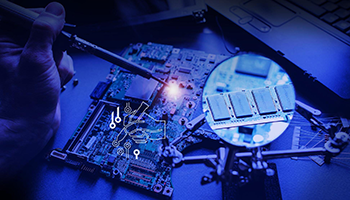

Diagnostic
Le diagnostic des équipements informatiques permet de déterminer des dysfonctionnements matériels et/ou des problèmes logiciels. Cela permet de trouver les meilleures solutions pour effectuer les réparations nécessaires, remplacer les pièces, modifier/réinstaller les logiciels en conflit, mettre à jour le système d'exploitation, les pilotes et autres programmes.
Sauvegarde et suppression de virus
Un ordinateur est toujours susceptible d'être attaqué par des internautes malveillants, il est donc essentiel d'assurer les défenses de votre ordinateur, avec un anti-virus, un anti-malware et un pare-feu, mais même alors rien n'est garanti et parce qu'il y a toujours un risque pour les Services Les techniciens fournissent ce service de nettoyage de virus et de logiciels malveillants.
Réparations Hardware
Dans la mesure du possible, Serviços Técnicos essaie de prolonger la durée de vie de votre équipement informatique, en réparant le matériel ou, en dernier recours, en remplaçant les pièces endommagées, de cette manière une augmentation de la durée de fonctionnement de votre ordinateur est garantie, et la sauvegarde des données de votre disque dur.